Vraja Riti Chintamani | Part 2 | Verse 15~58 | Shravana Utsav 2024 | HH Bhanu Swami Maharaj @ ISKCON Chennai on Feb 11, 2024
nama om vishnu-padaya Krishna-preshthaya bhu-tale
srimate bhaktivedanta-svamin iti namine
namas te sarasvate deve gaura-vani-pracharine
nirvishesha-shunyavadi-pashchatya-desha-tarine
Sri-Krishna-caitanya
prabhu nityananda
sri-adwaita gadadhara
shrivasadi-gaura-bhakta-vrinda
Hare Krishna Hare Krishna Krishna Krishna Hare Hare,
Hare Rama Hare Rama Rama Rama Hare Hare
So we stopped off yesterday by a little bit of description of how the spiritual world manifests within the material world. But I also pointed out that if you don’t have spiritual eyes you won’t see the spiritual dhama. Bhaktivinoda Thakur in Navadvipa Dhama Mahatmya he says, that actually for the materialist, Navadvipa Dhama and Vrindavan Dhama are covered by Maya. So when you go to that place you will see some dust and some garbage and some dogs and some pigs and whatever [Laughs]. But if you have spiritual eyes when you go there then you can actually see the spiritual Dhama and in Vrindavan you can see all the associates of Krishna there.
Nevertheless, even if we are not completely spiritual and cannot see the pastimes in the spiritual world, when we go, if we are devotional, we get great benefit from that. Just as name is non different from Krishna, so when we chant the name, Krishna’s form, qualities and pastimes are revealed. But that doesn’t happen till you reach Bhava and Prema. But still if we chant with pure intentions, in sadhana we get great benefit from the chanting. So therefore, living in the holy Dhama is advised even for people doing sadhana, not just people in Prema. So by chanting the name, even when we are in an impure state, we become purified, by living in the Dhama even if we are not completely purified, we get purified.
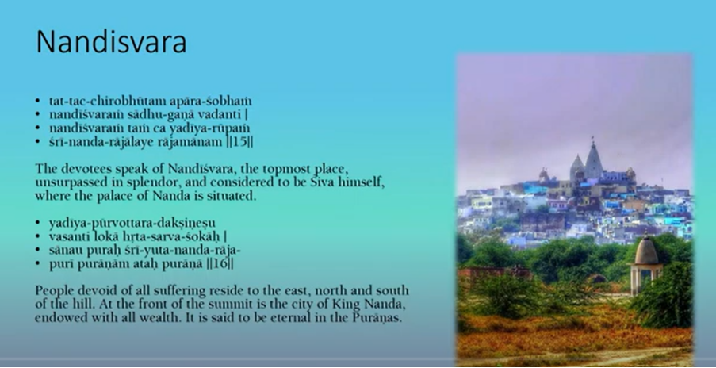
Vishvanatha Cakravarti Thakura begins by describing some of the places and the people there. Of course he starts with Nandisvara. This is the place where Nanda Maharaj has his palace. And of course, if you go to Vrindavan today also you can see that place. However when we go there we may not see what Vishvanatha Cakravarti Thakura describes here. So it is a very spectacular place because it is a spiritual world and it is made out of all sorts of jewels. So Nanda Maharaj has his palace in the city on top of that mountain. And on all sides there are different people, cow herds living. And though it appears in the material world actually it is eternal.
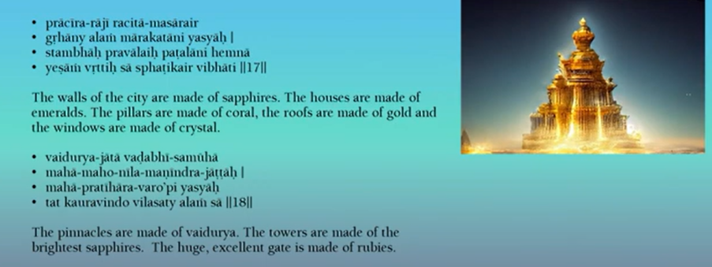
So like most cities, this city is surrounded by a wall. And the wall is made of sapphires. So sapphires are a blue jewel. Krishna is also compared to a sapphire, because He is dark blue [Laughs]. In the material world of course sapphires are a precious gem. And if you get a fine sapphire with a proper colour, a clarity etc, and it is big then it will be very very expensive. But in the spiritual world, the gems are readily available like sand or rocks we see here all over the place. So the walls of the city are sapphires and the houses have emerald walls. So of course emeralds are green, it is a green stone. The pillars or the columns are made out of coral. The roofs are made of gold and they use crystal for the windows. The tops are made out of vaidurya. Vaidurya of course in the Vedic literature is a little different from the modern vaidurya. In the modern world vaidurya is what we call cat’s eye. But I think when they describe it in the scriptures it is a jewel which shows many many different colours.
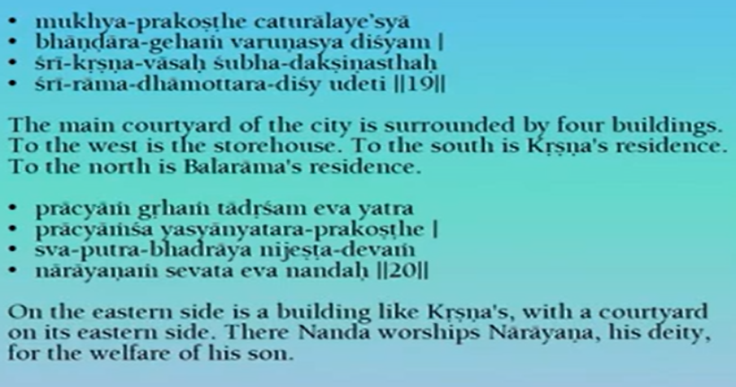
The gates of the city are made out of rubies and there is a huge courtyard in the middle.
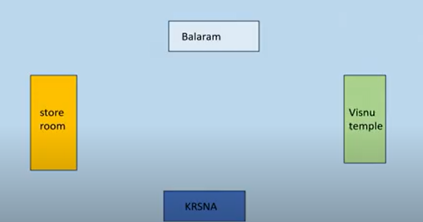
And we have on the different sides, different directions, we have Krishna to the south, storehouse to the west, south is Balarama’s place and east is a temple of Vishnu. So in many places we see that descriptions we see that Nanda Maharaj is a worshipper of Narayana. Of course, ultimately everybody there is worshipping Krishna, but as part of the past times as for deity they worship Narayana.
And thus, as I mentioned yesterday that when everyone sees Krishna doing remarkable things and they say well actually it is Narayana doing all of this. Because Nanda Maharaj worships Narayana and Narayana protects Krishna. And thus all the demons get killed. So in this way he gives specific areas where different buildings are in Nanda’s city.
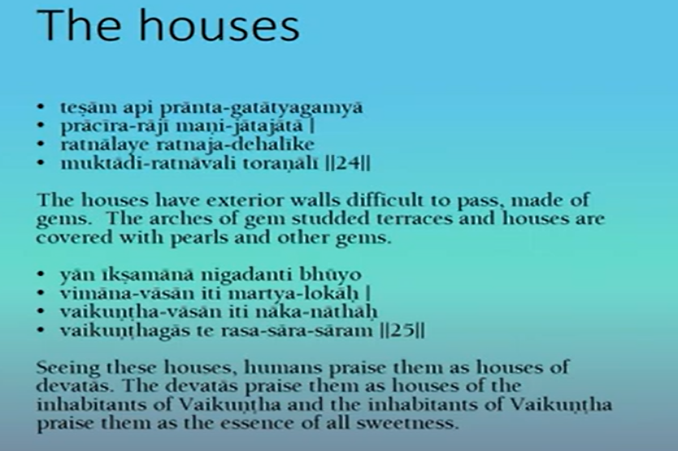
All the individual houses are also made of gems. So they have terraces and roofs and whatever made out of various jewels like pearls. If a human being sees the house they will say this is from Svargaloka and the devatas see the house they will say this is from Vaikuntha. And if the inhabitants of Vaikuntha see those places, they will say it is beyond that it is full of sweetness. So definitely, Svargaloka is very attractive and thus we can’t even imagine what that material place looks like it is so attractive. But Vaikuntha in the spiritual world obviously is completely different and more attractive than that. But both Svargaloka and Vaikuntha of course are covered with grandeur.
Devotee: Covered with what Maharaj?
HH Bhanu Swami Maharaj: Aishwarya.
So of course the descriptions here where everything is made out of jewels and gold looks like grandeur, but actually as it is said here, it is very sweet. So everything in that place even those made out of jewels and coral etc. it actually nourishes the sweetness of the highest planet of Krishna.
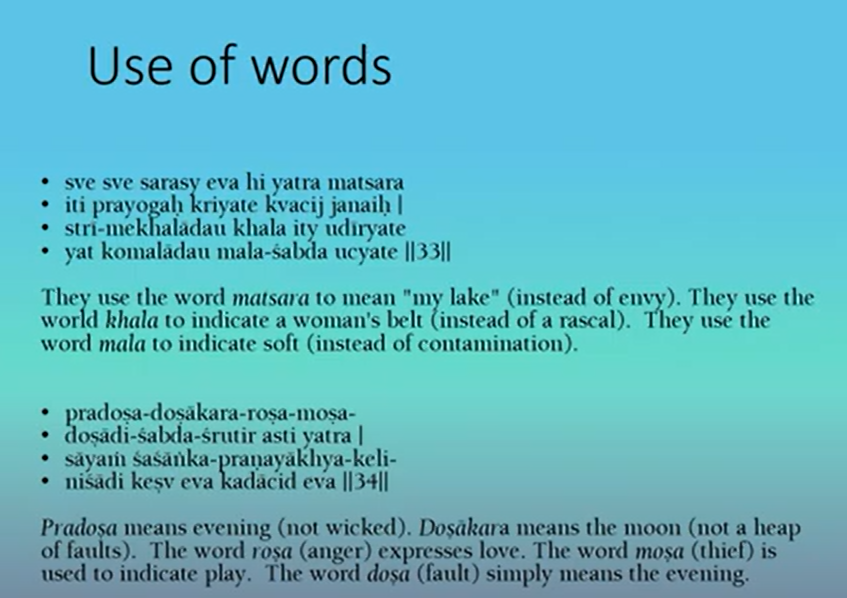
So there is a little section here on how people talk. So in the material world we have countless words, and some of the words indicate nice things and some indicate bad things. So in the spiritual world even the bad words indicate good things [Laughs]. So the word “Matsara” for us means “envy”. But of course there is no envy in the spiritual world. So they use the word but “Mat” of course means “me” or “mine” and “Sara” means “lake”, so it means “my lake” [Laughs]. So the word “Kala” means a “rascal” in the material world. But there is no rascals there, so it refers to a “belt”. So “Mala” here means “contamination” or anything “impure”. But in the spiritual world nothing is impure. But the word “Mala” there only indicates “softness”.
So the word “Pradosha” here can mean, “dosha” of course means “fault” or “very wicked evil”. But the other meaning even in the material world “Pradosha” means “evening”. So only in that sense is the word used in the spiritual world. So “Doshakara” in the material world means having a “heap of faults” [Laughs]. But the meaning in the spiritual world is only ”moon”. So “rosa” means “anger”. But in the spiritual world it means “love”.
“Mosa” means “thief”. But in the spiritual world it means “play”. “Dosa” means “faults”. But again in the spiritual world it means “evening”. So they may have all the same words but the usage is quite different.
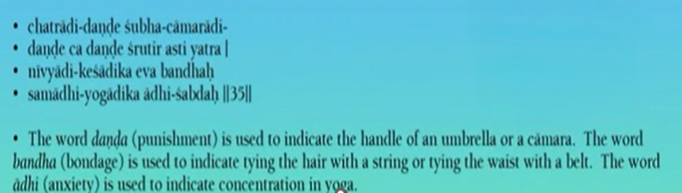
For us “Danda” means “punishment”. Like Yamaraja gives “Danda” – he “punishes” you. But the “Danda” also means a “stick”. So they use that word means stick in the spiritual world. “Bandha” of course means “bondage” [Laughs]. So we speak of the bondage in Samsara. But such things don’t exist in the spiritual world. But instead, of course you “bind up the hair”. So Mother Yasoda ties up Krishna’s hair. “Adhi” of course means “internal pain / anxiety”. But there is no pain in the spiritual world. But the word also is used to indicate “meditation or concentration on yoga”.
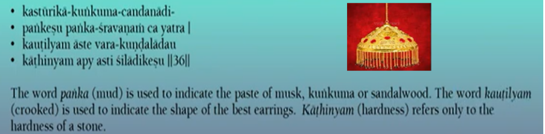
So “Panka” means “mud”. We have a nice word “Pankaja”, means “lotus”. And that literally means the flower that grows out of the mud [Laughs]. But “Panka” can also refer to like “sandalwood paste” or “kumkum” or “musk paste”. So “Kautilya” means usually “crooked”. But in the spiritual world it simply indicates the shape of some “earrings”. “Kauthinya” means “hardness” or “cruelty”. But they don’t use it for people. They only use it for things like stones, the hardness of a stone. So in this way because of the absence of all negatives in the spiritual world, even if there are what we call negative words, they are not used with that connotation.
Of course we do see that there may be anger or rosha etc., maybe crookedness. These are what we call secondary emotions or Vyabachari bhavas. So they emanate from Prema and they disappear into Prema. So even the so-called envy or anger or whatever, it ultimately manifests to nourish the Prema. So therefore, the people there are faultless even if they show these qualities.
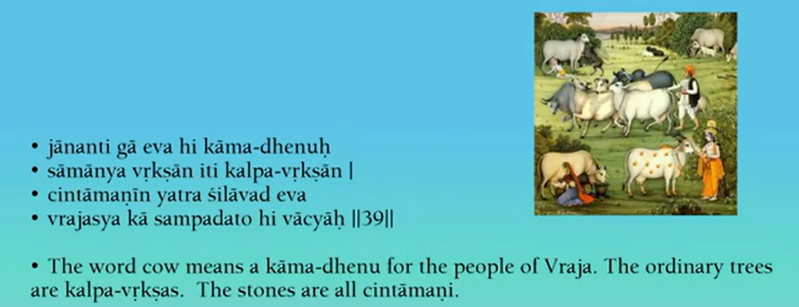
So the “cow” or “go” or “dhenu” is actually “Kamadhenu” in the spiritual world. Of course there are also material Kamadhenus but this is a spiritual one. And all the “trees” are “Kalpavrikshas” [Laughs]. All the “stones” are “Cintamani”. So all of these indicate that you get whatever you desire from them.
The usual cow gives milk. And if the cow gives a lot of milk all the time, then we will call it a Kamadhenu [Laughs]. But the real Kamadhenu will not only give milk, it gives anything you desire. And similarly, the trees here give one type of fruit. But if we go to a Kalpavriksha, it can give anything we want in the material world [Laughs]. Then if you take a stone, then again you can take that stone and whatever you get, manifests [Laughs]. But again this is material manifestation.
But sometimes our Acharyas use these words in the material sense to say that even in the material world we get inconceivable happenings. So how can the Cintamani give anything or how can the Kalpavriksha give so many different things ? – inconceivable [Laughs]. However in the spiritual world they yield something different. In the spiritual world nobody wants anything material [Laughs]. So everything is related to Krishna and Rasa in the spiritual world. But these things help nourish the Rasa.
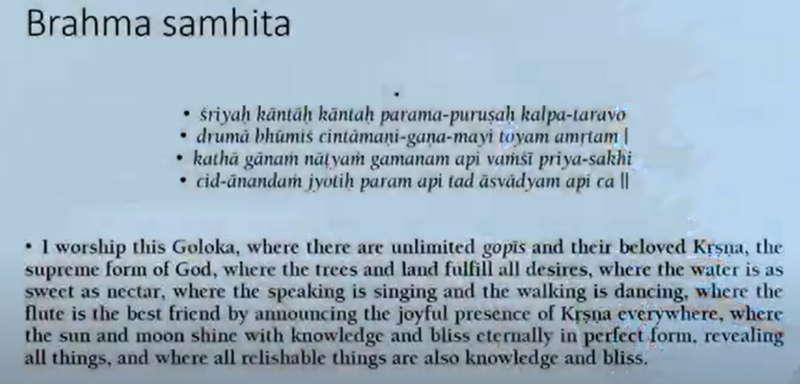
Of course this is expressed in other places like Brahma Samhita. We find this famous verse near the end of the Brahma Samhita. So there he says, I worship Goloka where there are unlimited Gopis and beloved Krishna. And the trees in the land fulfill all desires. So we have Kalpavrikshas and Cintamani everywhere. The water is sweet as nectar. The speaking is singing. The walking is dancing. And the flute is the best friend. Because it announces Krishna’s presence. So in other words all the actions and the singing and everything and the speaking and whatever are all most artistic and most attractive.
The sun and the moon shine with knowledge and bliss eternally. They reveal all things. Of course in the material world sun and moon also reveal. In the spiritual world it is said there is no sun, there is no moon, there is no stars. That is because there is no darkness, there is no ignorance. However, for past times we will have night and day. And though everybody naturally because they have spiritual vision are not affected by darkness or light in part of past times because it is night, it is dark so therefore they have a sun and a moon etc for day and night. So everything operates to nourish the past times and for those bliss.
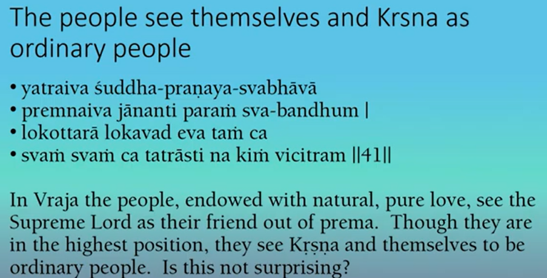
In spite of these remarkable surroundings made out of gold and gems whatever, Krishna and the people think of themselves as ordinary [Laughs]. In other words all that wealth and grandeur looks like grandeur to us, actually it is only there to nourish their sense of intimacy.
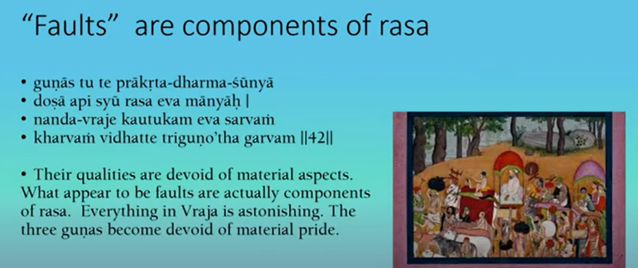
So I mentioned that sometimes within the rasa we will get anger or envy or whatever. So Radha gets angry at Krishna and there is a constant fight between Chandravali’s group and Radha’s group. And they play tricks on each other to defeat each other [Laughs]. And then when one gets disappointed they lament. So then this looks like fault. In the material world it is fault. In the material world we have rasa but actually the faults are more than the pleasures [Laughs]. So we have the material theory of rasa. And we will notice in that theory that the negative rasas predominate. We have positive rasas. We have Santa and Madhurya rasa. And all the other rasas are things like anger and fear and disgust [Laughs]. All the negative ones are there [Laughs]. So there is no concept of primary rasa and secondary rasa in the material world. But in the spiritual world, the primary rasas which are five predominate. And the seven secondary rasas only arise from the primary rasas and disappear into them again.
In fact Rupa Gosvami says actually they are not even rasas. But he classifies them in rasas just because Bharat Muni in the material rasa calls them rasas [Laughs]. But they are actually Vyabhachari bhavas. If we look there are 33 minor emotions called Vyabhachari bhavas that arise from the primary rasa. And when some of them become a little magnified they will become anger or fear or whatever. So he labels them rasas only when they become a little more prominent. But actually he says they are Vyabhachari bhavas. They are completely dependent upon the primary rasas. That is not so in the material world. We don’t have to have a primary rasa in order to experience fear or anger.
So if materialist looks at the pastimes of Krishna and the devotees then he will say, “oh look they are getting angry” [Laughs]. Why should we aspire for the spiritual world ? because we get anger and fear and jealousy and all these things in the spiritual world, it is like the material world [Laughs]. And some people because of this, they have no attraction to this rasa and they would rather go for Santa rasa or impersonalism. These are very peaceful states. So why should we get so disturbed.
We see that the inhabitants of Vrindavan after Krishna left were all completely devastated. So materialist people will say well look it is so painful. Why do we have pain in the spiritual world? We don’t want that, Let’s be peaceful, Let’s go on Brahman [Laughs]. So anyway the devotee when he sees these pastimes with all these different emotions he understands that they are just part of rasa. Though it may appear to be painful and disturbing or whatever, it arises from rasa and very quickly it will disappear. So that is the nature of these so called faults, they apparently appear but then they will disappear again.
So this also creates more variety in their loving affairs with Krishna. Just like we see Krishna with Rukmini. So Rukmini is ideal queen. She is Ideal wife. And she is also very submissive and quiet. But then Krishna decides well look this is too much. Let’s disturb her a little bit, try to disturb her [Laughs]. So then He starts making all sorts of statements. And then finally Rukmini does become a little disturbed, she faints [Laughs]. And anyway, Krishna apologizes. Well, I did this, it is just a joke, don’t take it too seriously, but I wanted to see you become angry. In other words, within rasa, this is Madhurya rasa in that case, there should be some variety. And sometimes Krishna will do that intentionally [Laughs]. Other times it will happen through the arrangement of Yoga maya and the Lila shakti, they all create some pastimes. [ Technical issue in Maharaj laptop for sometime ] So what appears to be faults are actually states to increase the rasa.
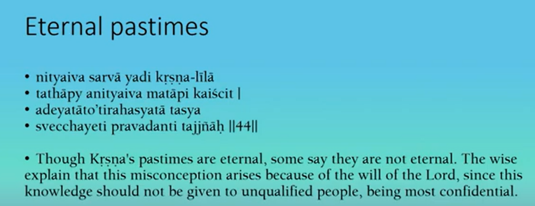
So everything is eternal in the spiritual world so therefore the pastimes are eternal. When we look at them and we read the pastimes in the Bhagavatam or if you are present in Krishna’s pastimes on earth, then it looks like the pastimes are not eternal. They have a beginning and an end. Govardhana lila has a beginning and an end. Rasa lila will have a beginning and an end. Krishna Damodara lila has a beginning and an end, so it looks like the pastimes are temporary not eternal. But actually everything in the spiritual world must be eternal. If it is temporary it would be a fault.
Because everything is perfect. But then what do we do about activities? Activities seem to have a beginning and an end. So Krishna gets up in the morning and then he takes his breakfast for instance [Laughs]. That event has a beginning and an end. So then how can it be eternal [Laughs] ? So this of course is approaching everything from a material conception. We perceive everything in terms of time with a past, present, future. So everything we will see in time. So everything will have a past, present and future. Thus activities will have a past, present and future [Laughs] and they will have a beginning and an end [Laughs]. So when we look at Krishna’s pastimes, we will think of the same thing. Oh Krishna has doing an activity, he has a beginning and an end , just like everything in the material world. And then we will say, it is not eternal [Laughs]. But in the spiritual world there is no time [Laughs]. There is no past, present and future [Laughs].
So how do they do activities [Laughs] ? How do they have pastimes? So it is difficult for us to conceive. But our Acharyas also give a little an example. Krishna is born in the material world. He is born in the prison house of Devaki, from Devaki in the prison house of Kamsa. It is an event, which has a beginning and an end. He is born, then Vasudeva takes him out of the prison and goes to Gokul. So how can that be eternal?
So as explained, yes it seems to have a beginning and an end but that event actually happens, and is happening and will happen eternally in some universe. There are billions of universes. So at every moment in some universe Krishna is appearing. So therefore His appearance coming out of Devaki is eternally going on somewhere [Laughs]. And His leaving the prison house also is going on somewhere eternally. So in this way there is no beginning or end to any particular event in Krishna’s pastimes. So similarly in the spiritual world because there is no time then we have events, but there is no beginning and end to those activities. So therefore when we hear about the pastimes of Krishna we should not conclude that they are temporary events.
But some of these facts are hidden from people in general. So here Srila Vishvanatha Cakravarthi Thakura says, that knowledge should not be given to unqualified people, because it is most confidential. So in other words Krishna allows misconception to take place [Laughs]. In other words, He does not reveal everything. Some things are hidden from people in general.
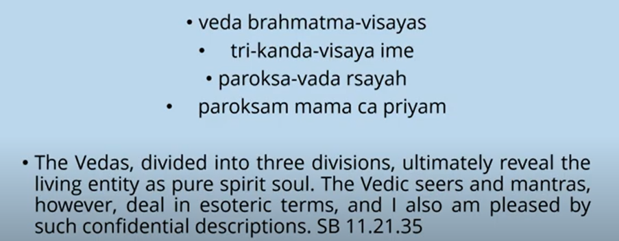
This of course is also stated in the 11th canto. Here it says the Vedic seers or sages and the mantras deal in esoteric terms. Esoteric here means not directly revealed, it is hidden. So in other words the scriptures do not always speak the direct truth. They will hide it and Krishna says, “I am pleased by such descriptions” [Laughs]. So this is called “Parokshavada” – indirect expression.
So the Lord and the sages can speak directly but they prefer not to speak directly. And thus though Bhagavatam is said to be the scripture which reveals the highest truth, even there, there is things hidden [Laughs]. So thus, we don’t even see the name “Radha” mentioned directly [Laughs]. And no other Gopis name is mentioned also. But then our Acharyas study the texts and then say, this is Radha, this one is Lalita, this one is Vishaka, this is Chandravali. They will start identifying the different Gopis even though they are not named [Laughs]. So in this way, the Vedas or scriptures in general do not reveal everything directly. Of course, we can say that the Vedas and Upanishads themselves are more indirect, Bhagavatam is more direct. And thus, in the Vedas we do not find the word Krishna mentioned much. Whereas the whole Bhagavatam is about Krishna directly speaking Krishna’s name. But even there in Bhagavatam some things are also hidden.
We have whole sections like the message that Krishna gives to the Gopis through Uddhava or Krishna speaking to the Gopis at Kurukshetra. So we get the main literal meaning of the words are there. And many people will accept those words as they are. But then the intelligent devotee will look at the words and say this does not make much sense. Krishna is speaking about Jnana and Yoga to the Gopis. How is that possible [Laughs] ? So therefore, they say there is a hidden meaning and they give all sorts of other meanings to the words [Laughs]. So in this way the Bhagavatam uses “Parokshavada” or “indirect expression” sometimes. And of course, one of the purposes of this is to keep the highest truth hidden from unqualified people. It is very difficult for them to understand. And if you reveal directly they will misunderstand it anyway.
It is also said that the Bhagavatam is like Mohini. Mohini gave the nectar to the Devatas and she took it away from the demons. So Bhagavatam will give the nectar to the devotees and hide it from the demons, materialists [Laughs]. And instead, they will read the Bhagavatam and get a completely different meaning.
So if the Jnanis and Yogis read Uddhavas message, Krishna’s message through Uddhava, they will say, “ Oh even Krishna is pacifying them with Jnana” [Laughs]. So we solve all our problems by Jnana [Laughs]. So people can read whatever they want out of Bhagavatam and the truth is hidden!
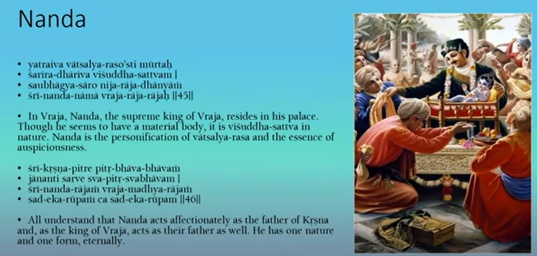
Okay, so then Srila Vishvanatha Chakravarti Thakura describes some of the people, main people there. Of course very generally, not too much in detail. So he starts with Nanda Maharaj. So though he is a cowherd, he is also the leader of the cowherds, therefore he is also called a king [Laughs]. So he lives in his palace on top of the hill. And it looks like he has a material body but actually its a spiritual body. And like all of the inhabitants of Vrindavan, he is filled with rasa. And in this case, it is Vatsalya rasa. He takes Krishna as his child.
So he acts as the father of Krishna and also as the father of everybody, because he acts like a king. And this nature is eternal. In Nectar of devotion of course it discusses all of the different rasas. So we get a whole section on each rasa. So in the western section of the Nectar of devotion, there, we get one chapter devoted to each rasa. So there he describes Vatsalya rasa.
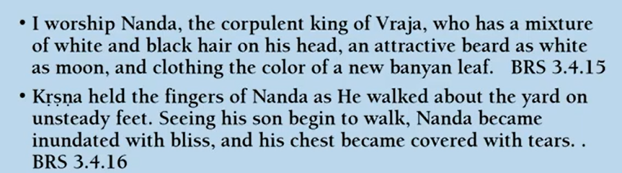
Of course the object of love is Krishna. And the ashraya or the experiencer is Nanda, Yasoda and the elder cowherds. So in that context then he describes the form and the emotions of Nanda Maharaj. So I worship Nanda, corpulent which means fat [Laughs]. Fat king of Vraja [Laughs]. So he has white and black hair on his head. In other words, he has grey hair. He is getting a little old. He has a beard white like the moon. And his cloth is the color of a new banyan leaf which would be green. So in other words he is kind of elderly, middle aged or whatever and like that with a little bit of white hair and a white beard [Laughs].
So Krishna held the fingers of Nanda as he walked about the yard with unsteady feet. And seeing his son begin to walk, Nanda became inundated with bliss and his chest became covered with tears. Of course in the Bhagavatam we see when Krishna was born, there is an elaborate description of Nanda Maharaj celebrating his birth. After many years and suddenly Krishna was born. So he was very joyous.
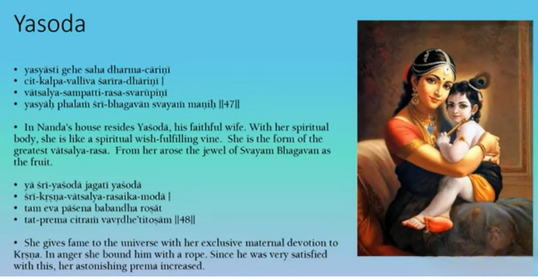
And the wife of Nanda is Yasoda. So she is a faithful wife, she is also of course in Vatsalya rasa. And actually, in the first part of the tenth canto, Sukadeva Goswami glorifies Yasoda as the greatest devotee. Literally of course Yasoda means, Yasa means fame. Da means to give. So she gives fame to the universe [Laughs]. Why? Because of her wonderful affection for Krishna, maternal affection for Krishna. Of course she got angry at Krishna and tied Him up. But Krishna was satisfied with that and that satisfied her and her Prema increased.
So like Nanda Maharaj, she is also described in the Nectar of Devotion. So like Nanda is the king, so she is the queen of the cowherds. She has wavy hair bound up by banda, cords [Laughs], with Sindur at the parting of the hair. She does not wear too many ornaments. When she sees Krishna, she begins to cry. Her complexion is like a dark blue lotus. So she is something like Krishna’s complexion. And she wears colorful clothing. Of course usually when we depict her in paintings, we don’t paint her black [Laughs]. But often the descriptions say she is very dark in complexion. Though there are some scriptures that say she is golden in complexion. So there is sometimes a little bit of difference.
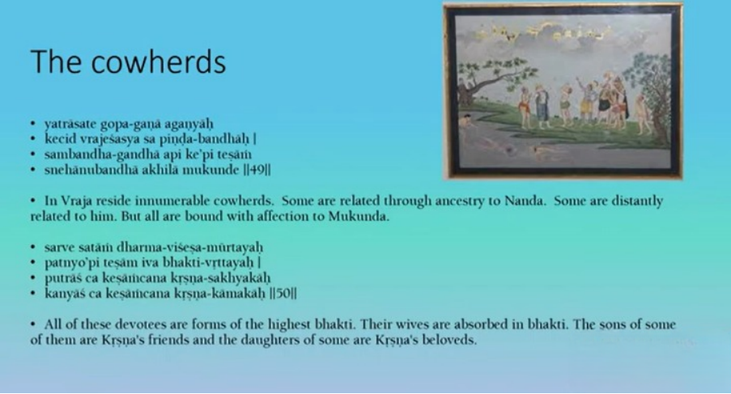
, So they are the chief cowherds, the queen and the king of the cowherds, and then we have all the other cowherds. Some of them are related in ancestry to Nanda Maharaj. But whatever, they are all bound to Krishna. They are all related to Krishna by affection. So they are all filled with the highest bhakti. So these cowherds have wives, the wives also have bhakti. These cowherds and their wives, they have children.
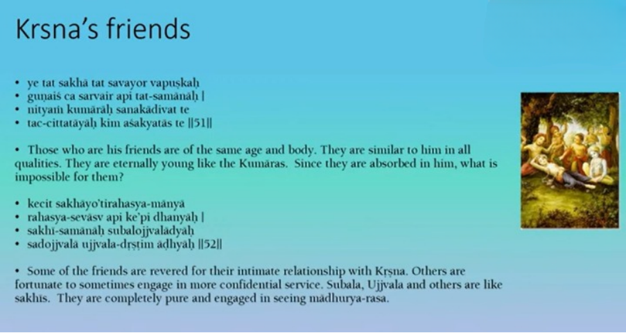
So many of the boys become friends of Krishna in Sakya Rasa. And many of the daughters, then they become gopis in Madhurya Rasa with Krishna. So they do have relationships with each other, like we have cowherds and their wives, and Nanda and Yasoda, and then they have their own children.
So their relationships also like Vatsalya and Madhurya, whatever but these are always secondary because everybody is actually concentrated on Krishna. So the elder cowherds have children, so some of them are the sons, so these sons become Krishna’s friends.
So they are generally the same age and similar in form. They have similar qualities and they are all eternally young. Some of them, of course its varieties of these friends, just like there are varieties of gopis. So some have a very intimate relationship with Krishna. And others have very confidential service, even by serving Krishna when he is in Madhurya Rasa. So in this way we get a variety of friends also.
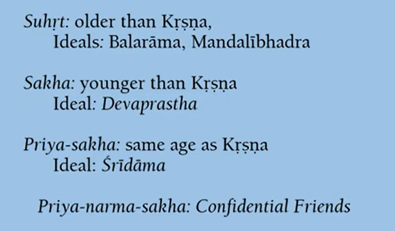
So in Nectar of Devotion, Rupa Gosvami describes, there are basically four types of friends. Some are slightly older than Krishna, they are called Suhrt. And Balarama and Mandalibhadra are examples of this. Some are younger than Krishna [Laughs], so they are called Sakhas and Devaprastha is one of these. And then we have same age as Krishna, called Priya sakhas. An example of that is Sridama. And then we have the Priya narma sakhas. These are the confidential ones that also participate with Krishna when he is having his Madhurya Rasa.
So in this way we get a wide variety of cowherd friends. Also if we have older than Krishna, sometimes we will get a mixture of Vatsalya in there. So sometimes Balarama will show a little bit of Vatsalya for Krishna also. And the Sakhas who are younger than Krishna, they will show a little Dasya [Laughs]. And those who are exactly the same age as the Priya sakhas [Laughs], so they will be like, that’s the pure Sakhya Rasa [Laughs].
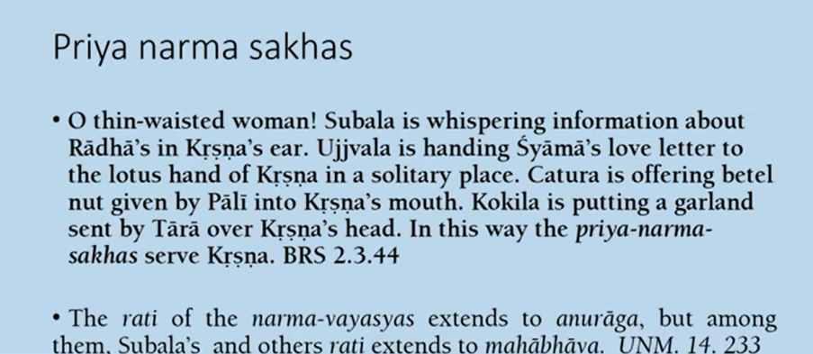
So the Priya narma sakhas are also very special. They are often engaged by Krishna in assisting with Madhurya Rasa. So this is described in Nectar of Devotion. Subala is whispering information about Radha in Krishna’s ear. Ujjvala is handing Shyama’s letter, that’s a Gopi, love letter to the lotus hand of Krishna in a solitary place. Catura is offering betel nut given by Pali into Krishna’s mouth. Kokila is putting a garland sent by Tara over Krishna’s head. In this way the Priya narma sakhas serve Krishna.
So of course in Sakhya Rasa prominently they come up to the stage of Pranaya, which means intimate friendship. But these Priya narma sakhas, they go up to a higher stage called Anuraga, more intense one. But among these Priya narma sakhas, some will go up to Mahabhava even, like Subala. So in other words their affection for Krishna is very intense and thus they will also show intense Sattvika bhavas.
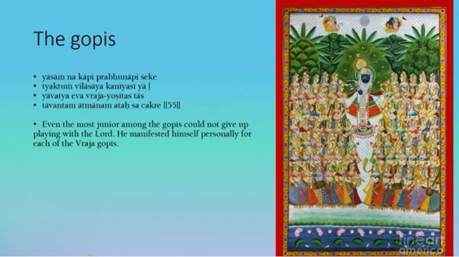
Then we have the Gopis. So of course we have many Gopis. Of course we have millions and millions of cowherd boys also. But usually when we depict Krishna and the Gopis or Krishna and the cowherd boys, it’s impossible to depict millions, so we just put a few, draw a few cowherd boys or Gopis. But spiritual world is unlimited and the number of devotees is also unlimited.
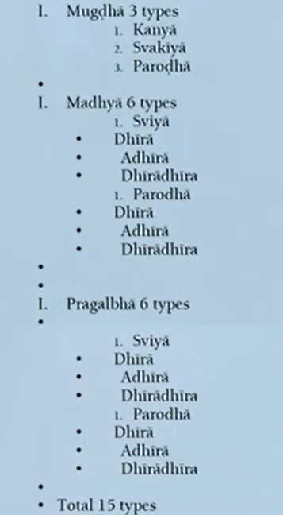
And we get all sorts of varieties. So I mentioned among the cowherd boys you get varieties, younger, older, same age, etc. Among the Gopis you’ll get not so much the age as other factors. Some of the Gopis are unmarried. So they are called Kanya. Some actually marry Krishna in Vrindavan. So that’s Svakiya rasa. Some are actually married to other cowherds and they have relationship with Krishna. It’s called Parodha.
And then besides that of course, those three types, we get different types of Gopis. The Mugdhas are most innocent and docile. The opposite extreme is called the Pragalbha, these are very bold Gopis, like Lalita. They will show anger at Krishna very directly. And then we have the Madhyas who are in between the Mugdhas and the Pragalbhas.
So they may also be married or married to somebody else and then they’ll have also varieties within that. So here we have Dhira, Adhira, Dhiradhira . That’s also very controlled, slightly controlled, mixed and uncontrolled. [Laughs]
So then we have, if you look here, it’s a total of 15 types [Laughs]. They also have intensity. Some have more intense Prema, some have less. Uttama is most intense, Madhyama is medium, Kanistha is less, that’s another classification of three. And then they will go through different conditions between meeting and separation from Krishna.
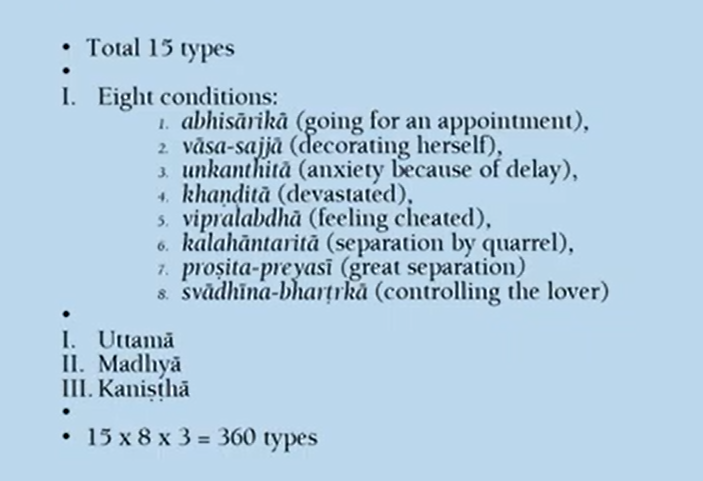
So we take the 15 types, multiply by the 8 conditions and then the 3 intensities of Prema and we get 360 types of Gopis [Laughs]. So of all the Gopis, Radha and Chandravali are considered to be the best. And each of their groups has 10 million Gopis. And when the Rasalila took place, there was a billion Gopis. And of course Krishna expanded himself into one billion forms, because he was with each Gopi [Laughs]. So the numbers are inconceivable. But each is an individual.
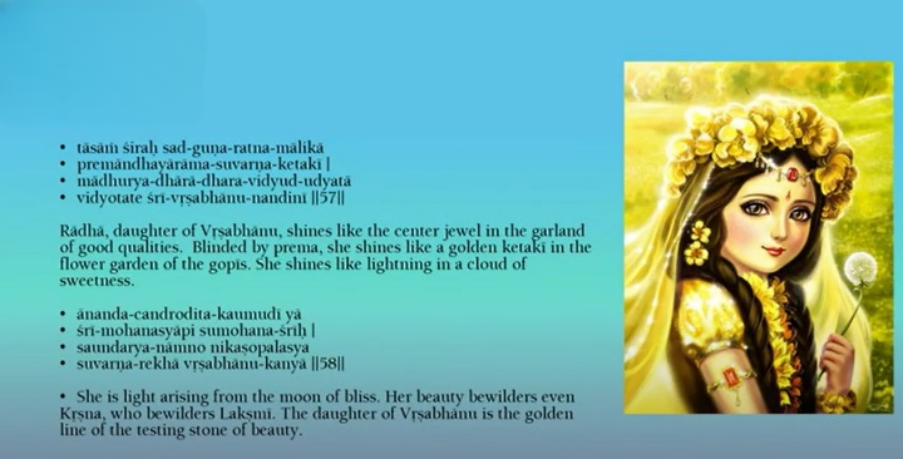
So as I said we have all sorts of different types like this. So they’re all individuals. But among the Gopis, Radha ultimately is supreme.
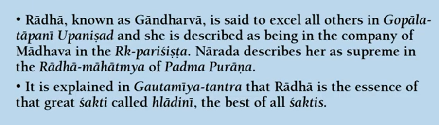
Of course, she’s also mentioned in scriptures. So in Gopal Tapani Upanishad, she’s called Gandharva. She’s also mentioned in the Rk- parisista, supplement to Veda. And Narada Muni describes her in the Padma Purana. And in Gautamiya Tantra, Radha is said to be the essence of Hladini Shakti. So therefore, Radha is referred to in all these different scriptures.
Okay Hare Krishna.
Q & A
1)Maharaj, we hear about Vrindavana and following the mood of its residents. Similarly, how does one attain Navadvipa, which is non-different from Vraja? Does developing Svarupa in one of these allow one to enter into another one also?
So to attain Navadvipa, of course, we have to worship Mahaprabhu. Of course, we also know that we cannot separate Caitanya Mahaprabhu from Radha and Krishna. So we all worship both. We worship Radha Krishna, we also worship Lord Caitanya.
And in order to attain Radha Krishna in Vrindavan, we have to worship Caitanya Mahaprabhu. So some other devotees, of course, will put a little more emphasis upon Caitanya Mahaprabhu. So actually, if you worship Lord Caitanya, you can also go to Navadvipa in the spiritual world. And in fact, you can actually have two forms. You can have a form in Navadvipa in the spiritual world and a form in Krishna’s pastimes also.
2) The four Kumaras got angry in Vaikuntha. Is this their fault?
So, Kumaras get angry, Gopis get angry, Radha gets angry, Krishna gets angry.. [Laughs]. So, of course, the Kumaras are Shaktiavesha Avatars. So the Shaktiavesha Avatars have eternal Spiritual bodies. So, they can’t make any mistakes [Laughs]. However, by the will of the Lord, it can look like they have faults or whatever.
So therefore, they will show some anger or whatever for the pastime of Jaya and Vijaya coming to the material world. Actually Baladeva Vidyabhusana explains that even the Devatas should not be criticized if they show some fault. The Devatas are also exalted devotees [Laughs]. So, if they show some fault, then we should not blame them for that. We can say this is also an arrangement of Krishna for pastimes. Just like Brahma also, we cannot criticize for trying to fool Krishna [Laughs]. Definitely, he was bewildered, but the bewilderment was an arrangement of Supreme Lord Himself.
3) Maharaj, you mentioned about words like Matsara, Mala, Kala, Rosha, etc., which have negative meanings in material world. But I assume these words appear in Bhagavatam or other scriptures written by realized souls. So, the question is, why have the realized Rishis or Munis write these words and how to understand this?
So, the scriptures often talk about pastimes that also involve material world. So, Bhagavatam describes many demons, there are no demons in the spiritual world.
So, therefore, such words will be used in relation to demons. They are full of ignorance. They are contaminated. They are in bondage [Laughs]. Similarly, the scriptures will speak about the Jivas in bondage. So, in referring to the material world, they will use these words.
In the spiritual world, they don’t talk about the material world. They are never aware of the material world at all [Laughs]. So, therefore, the words can never be used in the same way.
4) Maharaj, in the spiritual world, all negative traits are actually spiritual compared to the material world. The question is, how does a devotee who has material qualities, thoughts and anarthas realize the spiritual rasa?
So, everybody in the material world, even those doing sadhana bhakti, are influenced by material conceptions. Nevertheless, we are encouraged to practice spiritual life. So, first, we have to have a little faith.
And with that faith, we will accept scriptures. And scriptures will give a description of Supreme Lord and His wonderful qualities. And also, the devotees have their wonderful qualities.
And because he has faith, he will accept that as true. And based on Lord with His qualities, then he will begin worship, developing some attraction. So, by associating, we develop similar qualities. So, by associating with the Lord in the form of His Murti or the Holy Name, etc., then we will develop qualities like Krishna. And these will begin to replace the material qualities. Another way of saying this is by practice of bhakti in Sadhana, two leaves manifests from the seed of bhakti. One is kleshagni, destruction of all kleshas, sufferings. So, klesha refers to all your karmas, all your vasanas, all your anarthas, all your ignorance.
So, sadhana bhakti destroys that. But simultaneously, subhadha takes place. That means manifestation of good spiritual qualities.
So, this also takes place simply by the performance of bhakti. So, by worshipping Krishna full of all wonderful qualities, we destroy all the bad qualities and get all the good qualities.
5) Hare Krishna Maharaj, What was Krishna doing when the invaders attacked Vrindavan when they destroyed His temples, killed His devotees, buried the idol vigrahas. How would they do it when Krishna is there? How could even the invaders touch Vrindavan?
So, if you have spiritual eyes, you will see nothing is destroyed [Laughs]. Even Dwaraka went under the ocean, but actually the pastimes are still going on in Dwaraka also. So, with our material eyes, we will see something, but that is not actually the real Vrindavan or the real Dwaraka. So, we have to be very careful when we look at these places.
6) What is the destination of one who worships Radha Krishna without worshipping Mahaprabhu?
Well, very difficult to attain. So, if you want easy attainment, we go through Caitanya Mahaprabhu.
7) There is no (material) measure in the spiritual world, but when we say Nanda Maharaj has 9 lakh cows etc, how to understand that ?
Numbers of course are also part of our material world. So we could say how many people are in the Spiritual world, how many planets are there, we cannot really say. It is unlimited. Of course, even the material world looks unlimited to us. We don’t know how many universes there are even. But, material world does have a limit. And spiritual world has no limits.
Therefore, we cannot really use numbers properly to describe how many millions of Gopis, how many houses, what are the dimensions, etc. But, we just use numbers to give us some idea.
8) What is the difference between the love of Yasoda for Krishna and an ordinary mother’s love for her child in material world?
Well the big difference of course is the object of love is Krishna. And secondly that love is called Prema. Ofcourse we call Vatsalya. In the material world, the mother will have Vatsalya for her child. But, it is not Prema. So, yes, it is affection, but it is material affection. So, what this means is, all the affection shown in the material world is always covered by ignorance. Which means, it is based upon our conception that I am a material body [Laughs].
So, Vatsalya is relating our material body to another material body. And any enjoyment we get out of that, any rasa, is our enjoyment, which is also illusory. Because it is related to a material body. So, therefore, also temporary and very weak.
So, Radha’s relation with Krishna is eternal and spiritual and strong. And no ignorance, no sense of selfish mentality.
9) If there is a constant rivalry between Chandravali and Srimati Radharani for Prema, how can one see someone approaching Radharani for Krishna Prema?
So, if we are approaching Radha for Prema, we are approaching through Radha’s group. And there are millions of Gopis in Radha’s group. Of course, we have the eight Sakhis chief, we have Manjaris, so many different persons there, and they are all cooperating with Radha to love Krishna.
So, those following Caitanya Mahaprabhu in Madhurya rasa, then they will join that group. And with the mercy of Radha, then we get introduced to Krishna. Of course, if we were to join Chandravali’s group, then we would be enemies with Radha [Laughs]. But Krishna also has a relationship with Chandravali and He has a relationship with all the other groups. He can expand Himself for every single Gopi.
Devotees: Thank you Maharaj. HH Bhanu Swami Maharaj Ki.. Jai !! HDG Abhay Charanaravinda Bhakti Vedanta Swami Srila Prabhupad Ki.. Jai !!